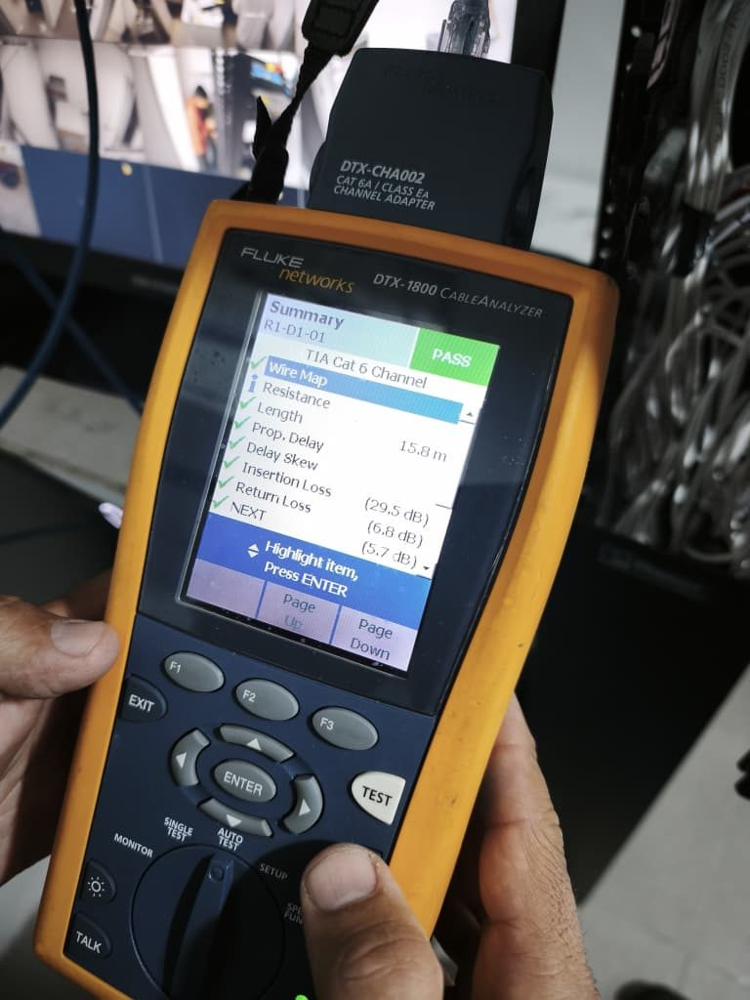

Ficha técnica
- Fabricante
- Fluke Networks
- Lanzamiento
- 2004
- Frecuencia máxima
- Hasta 900 MHz
- Fin de pedidos
- 30 de junio de 2015
- Reemplazo
- Versiv y DSX CableAnalyzer

Qué es el DTX-1800
El DTX-1800 CableAnalyzer es un certificador de campo para cableado de cobre y, con módulos adicionales, de fibra óptica. Salió al mercado en 2004 y según su fabricante se usó en 92 países y certificó más de mil millones de enlaces. Fue el primer probador de campo en ofrecer pruebas de diafonía entre cables vecinos (alien crosstalk) y el primero en cumplir plenamente con la condición de lanzamiento de fibra conocida como encircled flux.
Estas capacidades eran clave para certificar Cat 6A, el cableado de cobre pensado para 10 Gb/s.
Qué se puede hacer con él en cobre
- Certificar enlaces permanentes y canales de Cat 3, 5, 5e, 6 y 6A (Clases C, D, E y EA) con los adaptadores correspondientes.
- Certificar Clase F con adaptadores opcionales, y soportar la certificación de 10 Gb/s sobre cobre con el kit dedicado.
- Medir hasta 900 MHz y ejecutar el AutoTest, que realiza todas las pruebas de un perfil de norma en una sola secuencia.
- Localizar la causa de una falla con los analizadores en dominio del tiempo (HDTDX y HDTDR), que indican a qué distancia está un conector defectuoso o una discontinuidad.
- Medir cable coaxial: longitud, retardo de propagación, impedancia y pérdida de inserción, con el adaptador apropiado.
- Verificar servicios de red hasta 1 Gb/s con el módulo opcional de servicio de red.
Qué se puede hacer con él en fibra
Con sus módulos de fibra el equipo incluye medidor de potencia óptica y localizador visual de fallas. Existen módulos multimodo (850/1300 nm), para Gigabit y monomodo (1310/1550 nm), con los que se obtiene la pérdida del enlace, la longitud y el reporte de cada fibra. No es un OTDR: la reflectometría la ofrece un equipo aparte.
La teoría de este tipo de pruebas se explica en certificación de fibra Tier 1 y Tier 2.
Software y reportes
Los resultados se descargan al software LinkWare, que genera reportes de certificación y permite combinar los de cobre, fibra y servicios de red en un solo informe. Una opción de análisis estadístico agrega resúmenes de desempeño del proyecto. En equipos más nuevos, el servicio en la nube LinkWare Live concentra los resultados de varios probadores.
Estado actual: descontinuado y reemplazado
Fluke Networks dejó de aceptar pedidos del DTX-1800 el 30 de junio de 2015 para dar prioridad a su plataforma Versiv. El fabricante anunció que daría piezas, servicio y calibración durante al menos tres años más. Hoy su sucesor de gama es el DSX-5000, con 1 GHz de precisión y autotest de unos 10 segundos para Cat 6A, y para Cat 8 existe el DSX-8000 de 2 GHz.
Un DTX bien mantenido sigue midiendo, pero si un contratista lo usa conviene pedir su certificado de calibración vigente (habitualmente anual) y confirmar que el software tenga los límites de la norma actual. Para cableado Cat 8 o requisitos de normas recientes, un DTX ya no es suficiente.
Preguntas frecuentes
¿El DTX-1800 puede certificar Cat 6A?
Sí, con los adaptadores de enlace permanente o de canal correspondientes y la calibración vigente. Fue uno de los primeros en poder hacerlo.
¿Puede certificar Cat 8?
No. Para Cat 8 se necesita un equipo de mayor ancho de banda, como el DSX-8000.
¿Qué debo pedir si mi contratista usa un DTX?
El certificado de calibración vigente, la versión del software y el reporte completo de cada enlace, no solo un resumen.